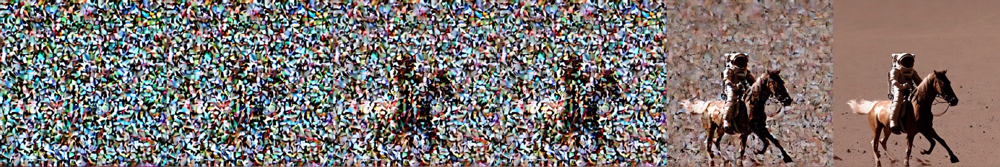
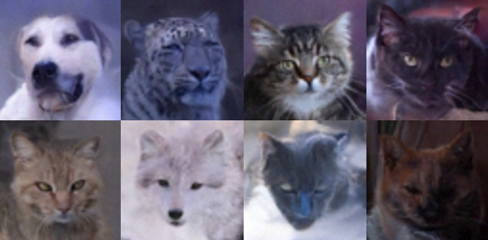
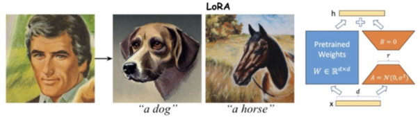
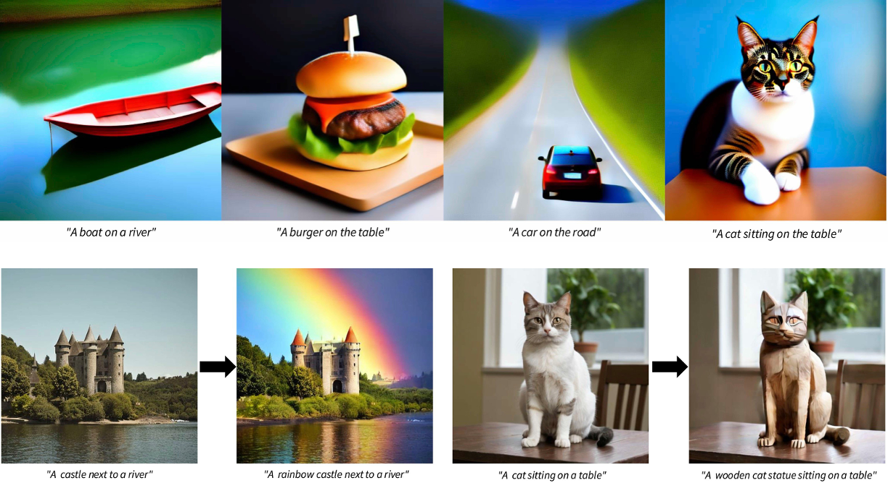
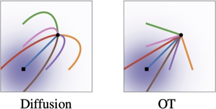
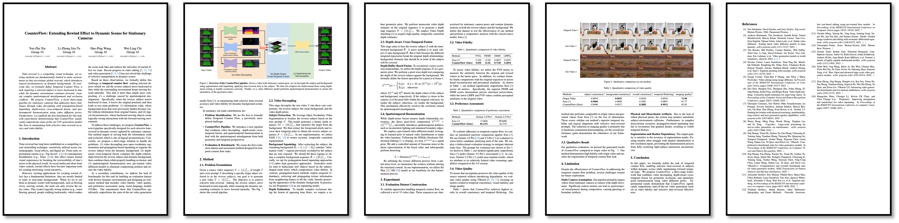

影像與視訊生成 Image and Video Generations 劉育綸 Yu-Lun (Alex) Liu · National Yang Ming Chiao Tung University
Course Contents
In this course, we will discuss diffusion models, covering both their theoretical foundations and practical applications.
Topics include:
- Background of Generative Models
- DDPM / DDIM / Score-Based Models
- CFG / Latent Diffusion
- Conditional Generation
- Stylization / Personalization
- Inverse Problem
- Knowledge Distillation
- Diffusion Synchronization
- SDE / ODE Solvers
- Consistency Models / Flow-Based Models
- DiT / Applications / Future of Generative Models

Prerequisites
Background in machine learning / deep learning. We'll specifically focus on diffusion models (while briefly discussing the background of generative models).
Experience with neural network implementation. There will be programming assignments and a final project — you'll need basic programming skills in Python and PyTorch to complete them.
Recommended prior courses: 線性代數、機率、微分方程、深度學習 + 深度學習實驗.
Lectures
| Thursday | 100 mins in-person lecture |
| Online | 50 mins recorded video |
2026 年課程直接沿用 →2025 年的課程錄影，並新增部分內容。
本課程內容 adapted from KAIST 的兩門課程：→CS492(D): Diffusion Models and Their Applications（Fall 2024） 與 →Diffusion Models and Their Applications（diffusion.kaist.ac.kr），並已取得 Prof. Minhyuk Sung 的授權。
Grading Policy
| 40% | Programming Assignments 4 assignments, 10% each — see Programming Assignments and the AI Coding Assistant Tool Policy. |
| 15% | Paper Presentation 10% Hacker's Deliverables (code, demo, presentation) · 5% 問問題 |
| 40% | Final Project 10% Proposal Presentation · 15% Oral & Demo Presentation · 10% Final Report (4 pages in CVPR LaTeX format) · 5% 問問題 |
| 5% | Participation in Guest Lectures |
Programming Assignments
- Assignment 1 (DDPM)
- Assignment 2 (DDIM & LoRA)
- Assignment 3 (Distillation)
- Assignment 4 (Flow Matching)
Each programming assignment is due two weeks after the assignment session. Submit your solutions on E3.
No late submissions allowed. I.e., you will get zero credit even with only 1 minute late submitting deliverables on E3.
Start the programming assignments as early as possible!




Paper Presentation
- 每組四位學生（請現在就開始找組員！）
- 報告的組別：報告近三年發表於 CVPR / ICCV / ECCV / NeurIPS / ICLR / ICML / SIGGRAPH / SIGGRAPH Asia main conference 的論文
- 根據你報告的好壞給予評分（總成績 5%）＋ Hacker's Deliverables（總成績 5%）
- 其他所有組別：問問題 — 在 presentation 中間或結束後皆可發問，每個 presentation 選出最 insightful 的問題加分（每次總成績 1%）
報告的組別必須扮演一個需要盡快展示這篇論文的駭客：在你自己的資料／任務上展示這篇論文的結果、準備與班上同學分享演算法的核心程式碼並展示你的實作、展示 code diff 或說明安裝環境踩到的坑 — 不要只是下載並執行現有的實作。
Final Project
每組四位學生（與 Paper Presentation 組別相同），三種選項：
- [量變] 改善現有論文的演算法（生成品質、速度等等）
- [質變] 創意開發新應用或演算法（影像 → 視訊、training → zero-shot）
- [復現] Re-implement 近五年任何一篇沒有公開程式碼的頂尖會議論文
Oral Presentation 根據創意／實用度／完整度／報告的好壞等等給予評分（總成績 15%）；其他所有組別扮演 reviewer 問問題，最 insightful 的問題加分（每次總成績 1%）。
Final Report 為四頁的 paper in CVPR LaTeX format：Title, Abstract, Introduction, Related Work, Method, Experiments, Conclusion, References.

Guest Lectures
| Ting-Hsuan Chen CS PhD student @ USC | TBA |
| Yao-Chih Lee CS PhD student @ University of Maryland | TBA |
Participation in guest lectures counts for 5% of the final grade.
Instructor
劉育綸 Yu-Lun (Alex) Liu
Assistant Professor in the Department of Computer Science.
| Homepage | →yulunalexliu.github.io |
| Office | EC713 |
Teaching Assistants
| 劉珆睿 資科工所博一 | ray5233512.cs15@nycu.edu.tw |
| 俞柏帆 資科工所碩二 | bamboofan.cs14@nycu.edu.tw |
| 黃靖恩 數據所碩二 | jingenhuang.cs14@nycu.edu.tw |
| 司徒立中 資科工所碩一 | sytwu.cs15@nycu.edu.tw |
AI Coding Assistant Tool Policy
你可以在 programming assignments 和 final project 中使用 AI coding tools，例如 ChatGPT、Copilot 以及 coding agents（Claude Code、Codex、Gemini CLI 等）。
但直接抄網路上或別人的程式碼仍然是嚴格禁止的 — 學期成績零分，並向學校報告。
Computing Resource
本課程不提供任何運算資源，請使用個人／實驗室／付費雲端資源完成 programming assignments 與 final project。
你會需要至少一張有 12 GB VRAM 的 NVIDIA GPU。
Syllabus (tentative)
2026 年課程直接沿用 2025 年的課程錄影（見 2025 欄），並於部分週次新增內容；新增部分將另行公告（見 2026 欄）。主題列表中的粗體項目為本學期新增的內容。
{{ r.sub }}{{ r.title }}
{{ r.title }}
- {{ t.text }}
{{ r.note }}
Related Courses and Credits
- →CS492(D): Diffusion Models and Their Applications
KAIST, Fall 2024, Prof. Minhyuk Sung - →CS 598: 3D Vision
UIUC, Fall 2024, Prof. Shenlong Wang - →Diffusion Models for Visual Content Generation
SIGGRAPH 2024 Course - →Diffusion Models for Image and Video Generation: From Foundations to Emerging Directions
SIGGRAPH 2025 Course - →CS231N: Deep Learning for Computer Vision
Stanford, Spring 2025
Tutorials
- →Denoising Diffusion Models: A Generative Learning Big Bang
CVPR 2023 Tutorial - →3D/4D Generation and Modeling with Generative Priors
CVPR 2024 Tutorial - →Diffusion-based Video Generative Models
CVPR 2024 Tutorial - →From Video Generation to World Model
CVPR 2025 Tutorial - →Accelerated Diffusion Models: From Theory to Interactive World Models
CVPR 2026 Tutorial - →The Principles of Diffusion Models: Real-Time Continuous & Discrete Diffusion
CVPR 2026 Tutorial
Blogs
- →Generative Modeling by Estimating Gradients of the Data Distribution
Yang Song - →What are Diffusion Models?
Lilian Weng - →Understanding Diffusion Models: A Unified Perspective
Calvin Luo - →Tutorial on Diffusion Models for Imaging and Vision
Stanley H. Chan - →Step-by-Step Diffusion: An Elementary Tutorial
Preetum Nakkiran, Arwen Bradley, Hattie Zhou, Madhu Advani
Books
- →The Principles of Diffusion Models
Chieh-Hsin Lai, Yang Song, Dongjun Kim, Yuki Mitsufuji, Stefano Ermon
Image Attribution
The header image is Théâtre D’opéra Spatial by Jason Allen, created using the AI software Midjourney.
Jason Allen won the digital-art competition at the Colorado State Fair last year for his piece “Theatre D’opera Spatial” that he created using the AI software Midjourney. Recently, the US Copyright Office refused to grant him a copyright for his piece, writing, “We have decided that we cannot register this copyright claim because the deposit does not contain any human authorship.” He plans to appeal.